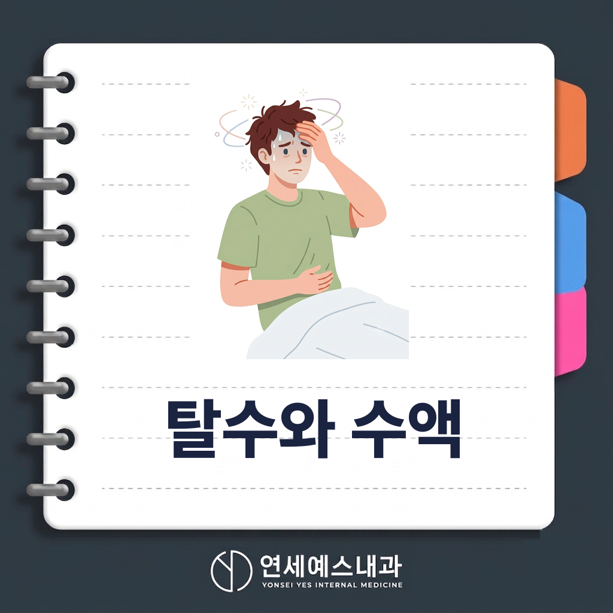
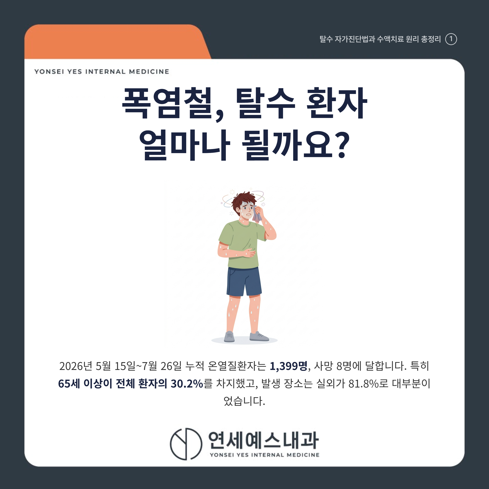
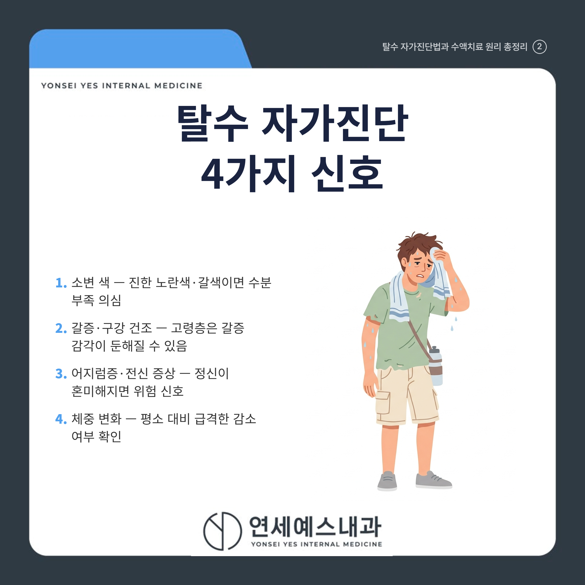
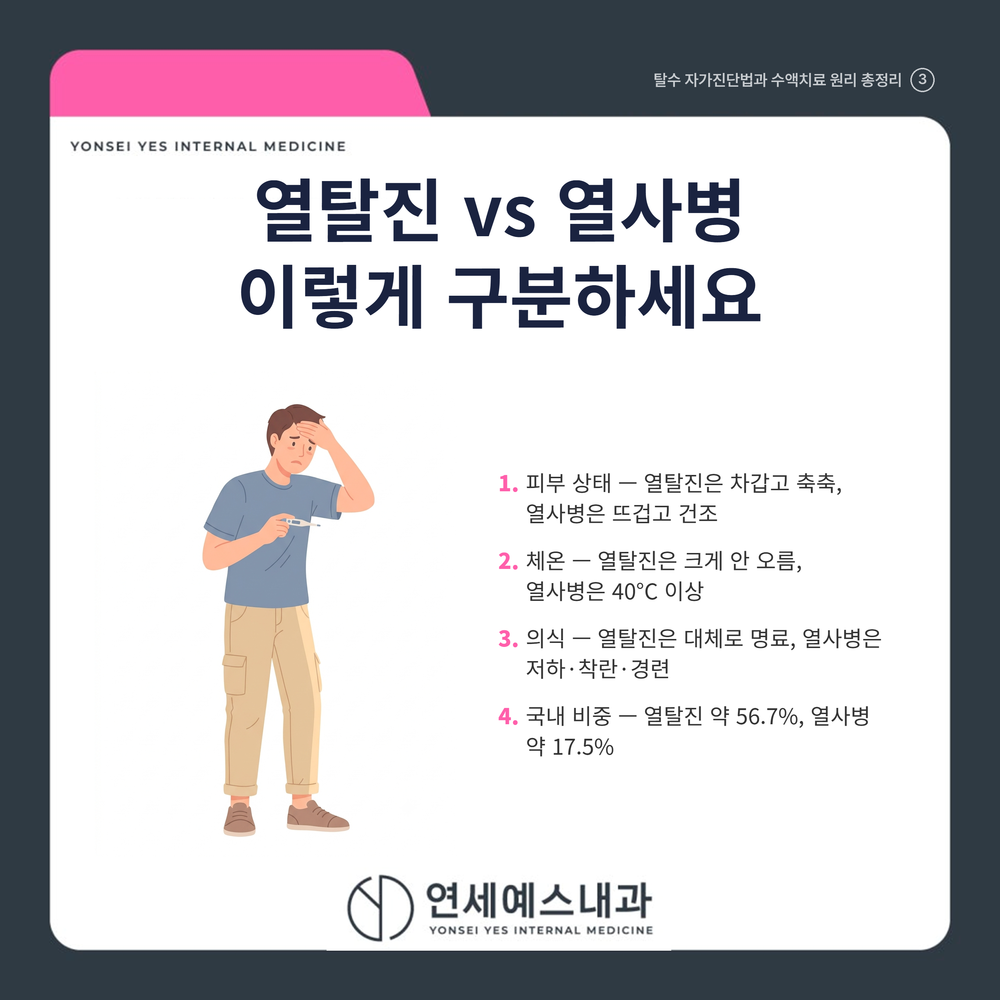
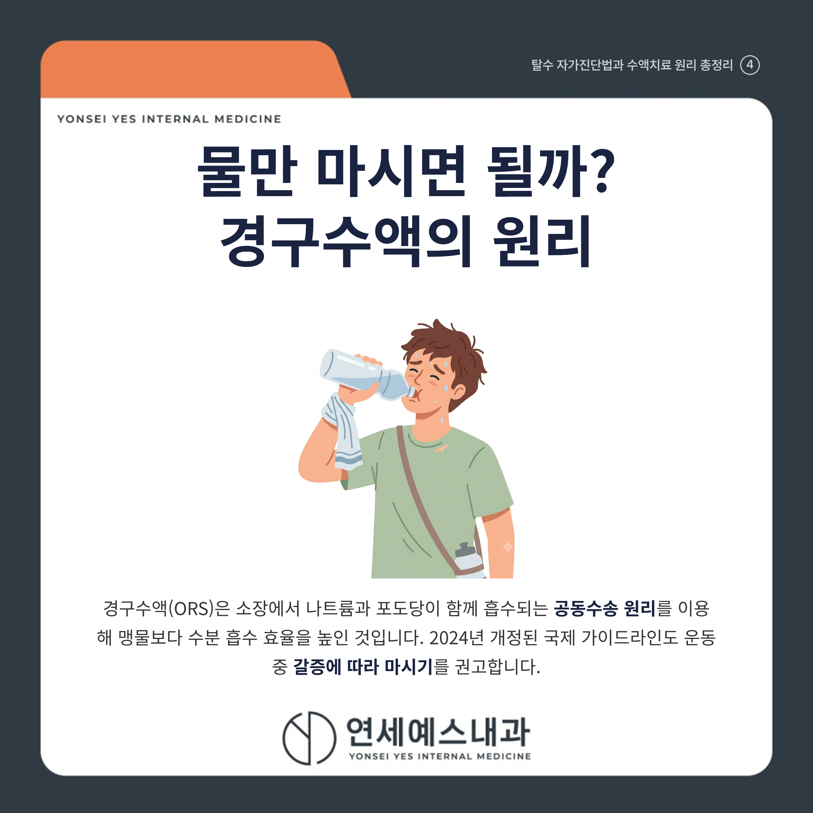
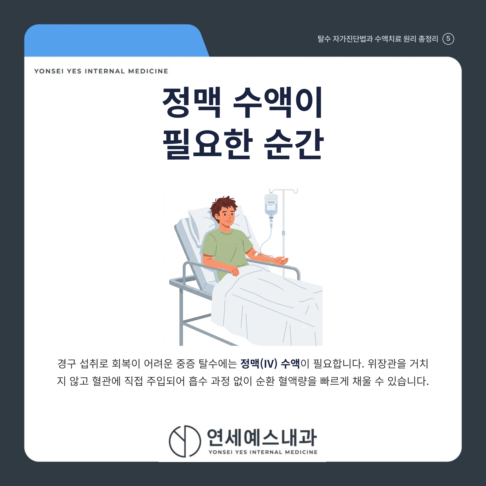
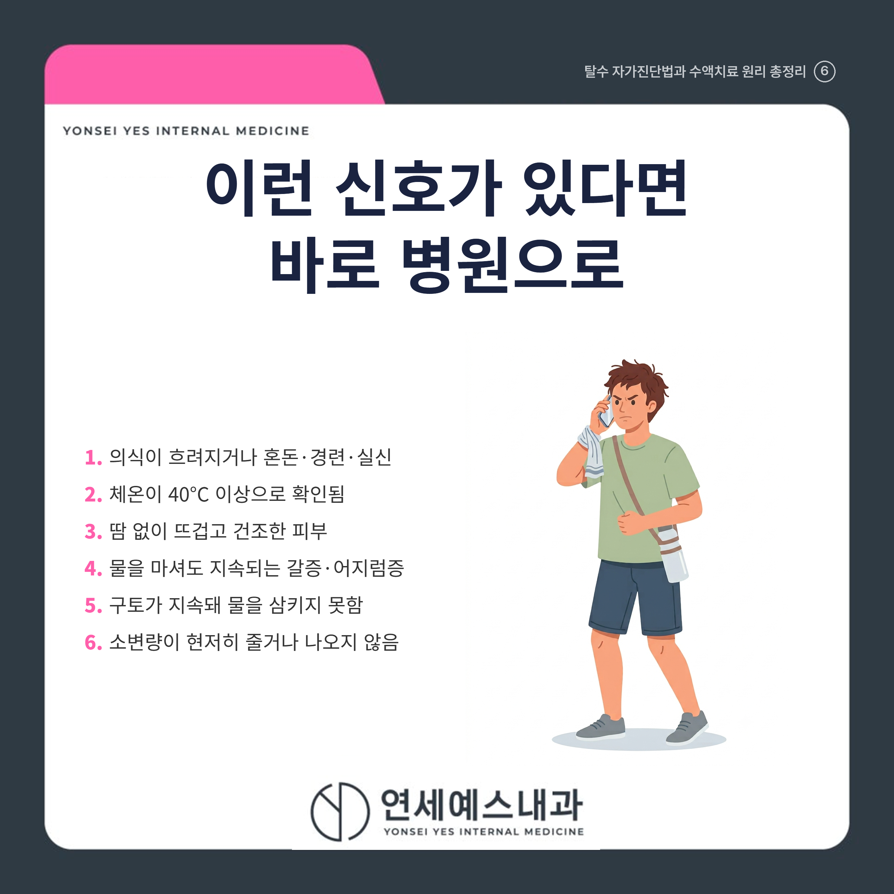
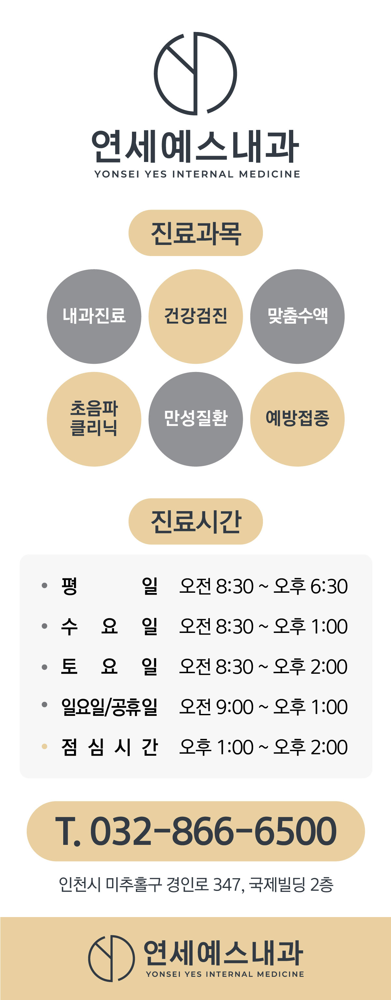

[주안동내시경내과연세예스내과] 탈수 자가진단법과 수액치료 원리 총정리

안녕하세요! 여러분의 건강 주치의 연세예스내과입니다. 😊
연일 이어지는 폭염 속에서 탈수, 남의 일이 아니라고 느끼시죠? 밖에 잠깐만 나갔다 와도 온몸이 축 늘어지는데도 "물 좀 마시면 괜찮아지겠지" 하며 대수롭지 않게 넘기시는 분들 많으실 텐데요, 탈수를 방치하면 열탈진(Heat Exhaustion)이나 열사병으로 빠르게 진행될 수 있는 위험한 신호입니다. 오늘은 스스로 확인할 수 있는 탈수 자가진단 방법과, 경구 수분 섭취만으로 부족할 때 왜 수액 치료가 필요한지 그 원리를 정리해 드리겠습니다.
1. 🌡️ 폭염철, 탈수 환자 얼마나 될까요?

질병관리청 온열질환 응급실감시체계 집계에 따르면, 2026년 5월 15일부터 7월 26일까지 누적 온열질환자는 1,399명, 이 중 사망자는 8명에 달합니다. 특히 65세 이상 고령층이 전체 환자의 30.2%를 차지했고, 사망자 8명 중 7명이 65세 이상이었다는 점은 눈여겨봐야 할 대목입니다. 발생 장소는 실외가 81.8%로 대부분을 차지했으며, 그중에서도 작업장(26.2%), 논밭(15.9%), 길가(12.4%) 순으로 많았습니다. "설마 나는 괜찮겠지"라는 안일한 생각이 가장 위험한 법이죠.
2. 🔍 이 4가지 신호, 탈수 자가진단 체크포인트

탈수는 갑자기 쓰러지는 것이 아니라 몸이 미리 보내는 신호를 거치며 진행됩니다. 아래 네 가지를 꼭 확인해 보세요.
- 소변 색: 몸이 탈수되면 항이뇨호르몬(바소프레신) 분비가 늘어 소변이 진하고 양이 줄어듭니다. 옅은 미색이 아니라 진한 노란색·갈색에 가깝다면 수분 부족을 의심할 수 있습니다.
- 갈증·구강 건조: 갈증, 입안이 마르고 침이 끈적해지는 느낌은 비교적 초기에 나타나는 신호입니다. 다만 고령층은 갈증을 느끼는 감각 자체가 둔해져 있어 "목이 안 마르니 괜찮다"는 판단이 오히려 위험할 수 있습니다.
- 어지럼증·전신 증상: 두통, 어지럼증, 피로감이 흔하며, 심해지면 일어설 때 핑 도는 기립성 저혈압이나 실신으로 이어질 수 있습니다. 특히 정신이 혼미해지는 증상은 탈수가 위험한 단계에 이르렀다는 가장 중요한 경고로 꼽힙니다.
- 체중 변화: 평소 체중 대비 급격한 감소가 다른 탈수 증상과 함께 나타난다면 중등도 이상을 의심할 수 있습니다. 정확한 감소율보다는 "평소와 다른 급격한 변화 + 동반 증상"을 함께 살피는 것이 실용적입니다.
3. 🚨 열탈진과 열사병, 이렇게 구분하세요

단순 탈수인지, 생명을 위협하는 열사병인지 구분하는 것이 가장 중요합니다. "땀이 나니까 괜찮겠지"라고 안심하시는 분들이 많은데, 절대 그렇지 않습니다.
| 구분 | 열탈진(일사병) | 열사병 |
|---|---|---|
| 피부 상태 | 차갑고 축축함 | 뜨겁고 건조함(땀이 잘 안 남) |
| 체온 | 크게 오르지 않음 | 40°C 이상 |
| 의식 | 대체로 명료 | 의식 저하·착란·경련 동반 |
| 국내 비중 | 약 56.7% | 약 17.5% |
다만 운동이나 노동 중 발생하는 열사병은 땀이 나는 상태에서도 발생할 수 있어, "땀이 나면 열사병이 아니다"라고 단정할 수는 없다는 점도 꼭 기억해 두세요.
4. 💧 물만 마시면 될까? 경구 수분과 정맥 수액의 차이

가벼운 탈수는 물이나 경구수액(ORS, Oral Rehydration Solution)으로 충분히 회복됩니다. ORS는 소장에서 나트륨과 포도당이 함께 흡수되는 공동수송(co-transport) 원리를 이용해, 맹물만 마실 때보다 수분 흡수 효율을 높인 것입니다. 실제로 2024년 개정된 국제 임상 가이드라인(Wilderness Medical Society)도 운동 중에는 갈증에 따라 마시기(drink-to-thirst) 방식으로 체중 2% 이상 손실을 막을 것을 권고하고 있습니다.

문제는 경구 섭취가 위장관 흡수 속도의 한계를 갖는다는 점입니다. 의식이 흐려지거나 구토가 계속돼 물을 삼키지 못하는 상태, 혹은 손실량이 큰 중증 탈수에서는 경구 섭취만으로 회복이 따라가지 못합니다. 이럴 때 필요한 것이 바로 정맥(IV) 수액입니다. 정맥 수액은 위장관을 거치지 않고 수분과 전해질을 혈관에 직접 주입하므로, 흡수 과정 없이 순환 혈액량을 빠르게 채울 수 있다는 점이 경구 섭취와의 핵심 차이입니다. 열사병 치료에서는 생리식염수 같은 등장액을 정맥으로 투여해 전해질 균형을 회복시키며, 냉각된 수액을 사용하면 체온을 낮추는 보조 효과도 함께 얻을 수 있습니다.
Q. 물을 마셔도 어지러운데, 언제 병원에 가야 하나요?
물을 마셔도 어지럼증이나 갈증이 계속되거나, 의식이 흐려지고 혼란스러운 모습, 구토가 지속돼 물을 유지하지 못하는 상태라면 스스로 수분을 보충하기보다 즉시 병원·응급실 방문 또는 119 신고가 필요한 상황입니다.

아래 신호 중 하나라도 해당된다면 지체하지 마세요.
[ ] 의식이 흐려지거나 혼돈, 지남력 상실, 경련, 실신이 나타난다
[ ] 체온이 40°C 이상으로 확인된다
[ ] 땀이 나지 않으면서 피부가 뜨겁고 건조하다
[ ] 물을 마셔도 갈증·어지럼증이 계속되거나 일어설 때 핑 돈다
[ ] 구토가 지속돼 물을 삼키거나 유지하지 못한다
[ ] 소변량이 현저히 줄거나 나오지 않는다
고온 환경에 노출된 사람에게 이런 뇌 기능 이상 징후가 나타나면, 주저하지 말고 구급차를 부르는 것이 가장 안전합니다.
✅ 오늘의 탈수 자가진단 요약
| 체크 항목 | 확인 방법 |
|---|---|
| 소변 색 | 옅은 미색인지, 진한 갈색인지 확인 |
| 갈증·구강 상태 | 입 마름·끈적임 여부 확인 |
| 어지럼증·전신 증상 | 두통·기립성 어지럼 여부 확인 |
| 체중 변화 | 평소 대비 급격한 감소 여부 확인 |
"탈수는 물 한 잔으로 넘길 수 있을 때 알아채는 것이 가장 안전합니다."
경구 수분으로 회복되지 않거나 위 체크리스트 중 하나라도 해당된다면, 참지 마시고 가까운 내과에 들러 전문의와 상담해 보시기 바랍니다. 특히 고령층이나 만성질환이 있으신 분들은 증상이 가볍더라도 미루지 마시고 가까운 내과를 방문하시길 권해드립니다.
※ 모든 치료 및 예방접종은 개인의 상태에 따라 발열, 통증, 알레르기 반응 등의 부작용이 나타날 수 있으므로, 반드시 의료진과 충분한 상담 후 진행하시기 바랍니다.
연세예스내과에서 전해드리는 건강 정보였습니다. 오늘도 건강하고 평안한 하루 보내세요!




#탈수자가진단 #열사병 #온열질환 #주안사거리내과의원 #미추홀내과 #미추홀의원 #미추홀내과의원 #옛시민회관내과 #옛시민회관의원 #옛시민회관사거리내과